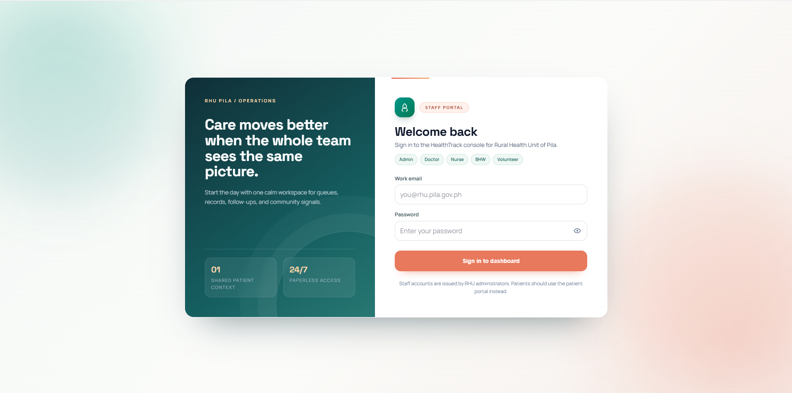
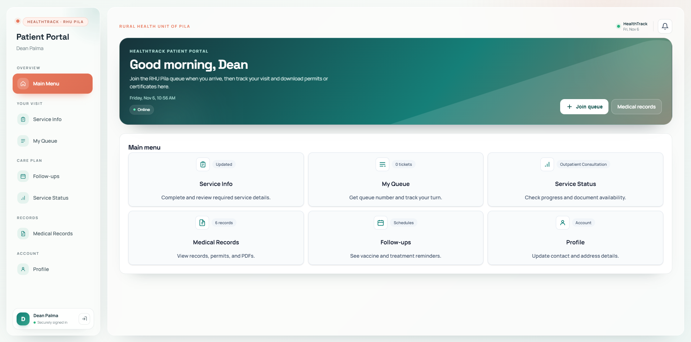
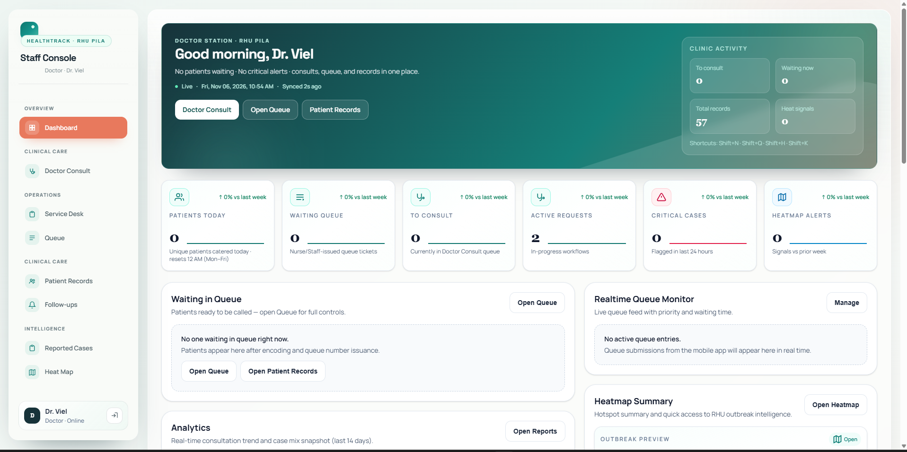
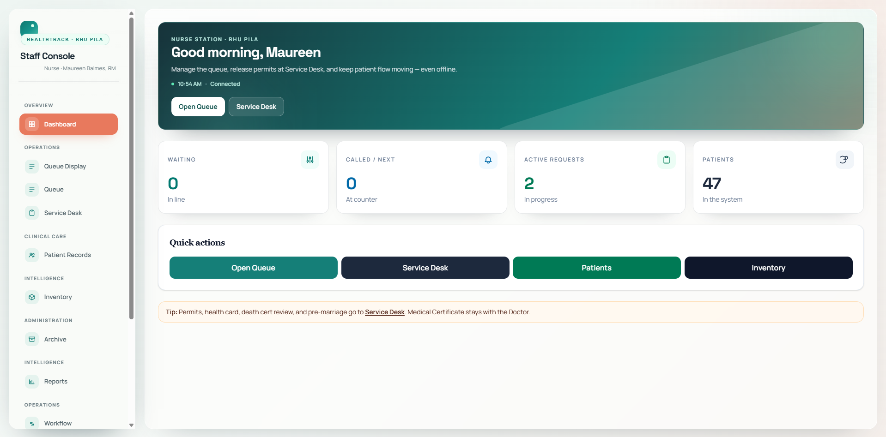
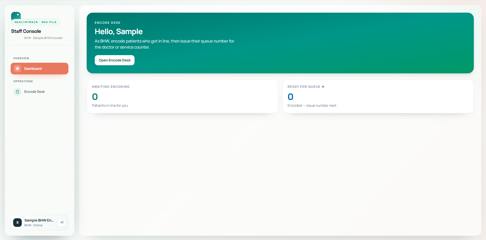
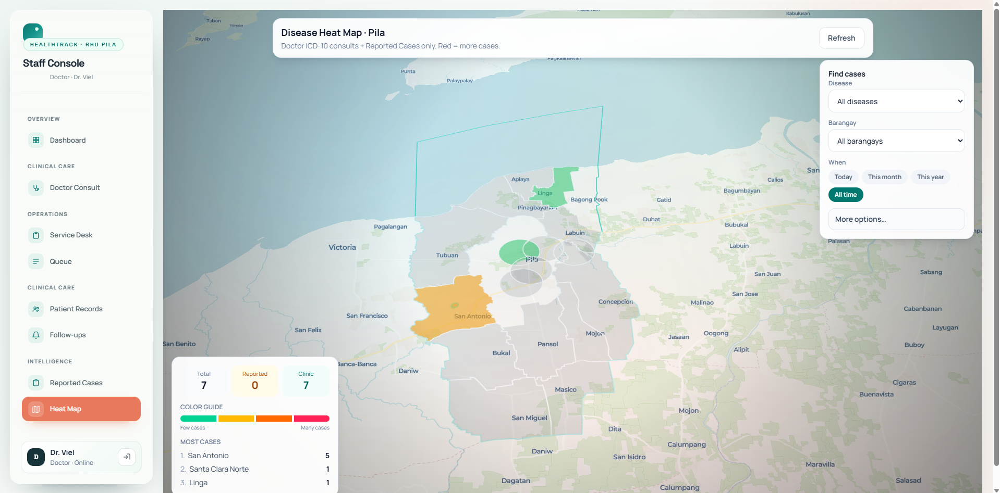

People behind the project
Research Team and Adviser
Benedict James A. Gellido
Researcher
Dean Joseph D. Palma
Researcher
Mel Andrei A. Villanueva
Researcher
Mia V. Villarica, DIT
Thesis Adviser and Associate Dean, College of Computer Studies
The challenge
Problem
The Rural Health Unit of Pila, Laguna needs an organized way to manage patient information and track patient flow. Manual, paper-based record keeping and queue management can make information harder to access, delay service, and complicate the organization of patient visits.
The study developed HealthTrack as a digital patient record and queueing system with GIS, bringing records, queue management, and geographic health information into one platform to support RHU operations.
Iterative development
Methodology
The study used Agile, developing HealthTrack through iterative planning, design, implementation, testing, deployment, and evaluation with stakeholder feedback.
Plan
Observe and assess RHU processes; identify system goals, scope, users, and requirements.
Design
Prepare web and patient-app interfaces, system architecture, and database design.
Develop
Build patient records, queues, schedules, inventory, and GIS features in iterations.
Test
Check functionality and usability, then use tester and stakeholder feedback to refine the system.
Deploy
Prepare and present the patient and RHU applications for use by patients and healthcare personnel.
Evaluate
Collect survey and interview feedback on usability, efficiency, functionality, and acceptability.
The solution
System
HealthTrack connects patient and staff portals with shared services to support RHU intake, queueing, clinical documentation, and follow-up care.

Staff Sign In
Staff members securely enter the HealthTrack console using their assigned account and role.

Patient Dashboard
Patients can access service information, join the queue, check service status, and view records and follow-ups.

Doctor Dashboard
Doctors can review clinic activity, manage consultations, access patient records, and view health signals.

Nurse Dashboard
Nurses can monitor the queue and active service requests and quickly open daily operational tools.

BHW and Volunteers Dashboard
BHWs and volunteers can encode walk-in patients and issue queue numbers for clinic services.

Disease Heat Map (GIS)
Authorized staff can explore reported and clinic cases by location to support community health monitoring.
Evaluation summary
Results
The reported testing and evaluations were positive across the measured areas.
System testing
34 / 34
test cases passed; 0 failed (100% pass rate).
User evaluation
250
respondents: 223 patients and 27 RHU personnel.
User feedback
On the study's 5-point weighted-mean assessment, all reported categories were interpreted as Strongly Agree. RHU personnel ratings ranged from 4.27 to 4.38; patient software-quality ratings ranged from 4.38 to 4.48. Technology acceptance ratings ranged from 4.37 to 4.42 across perceived ease of use, usefulness, attitude, and intention to use.
Summary based on the testing and evaluation tables in TEST11.pdf.
Explore further
Links
Project resources and documentation.
Update these paths if the page is published from a separate repository or deployment root.